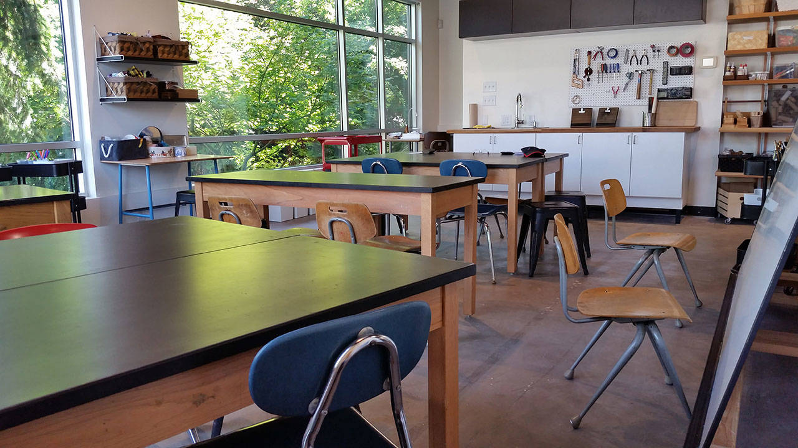
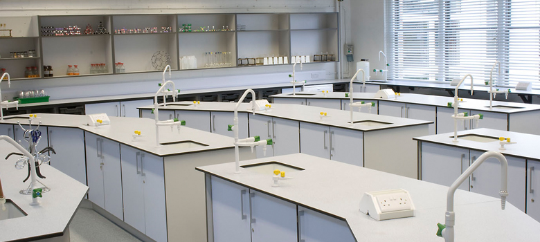
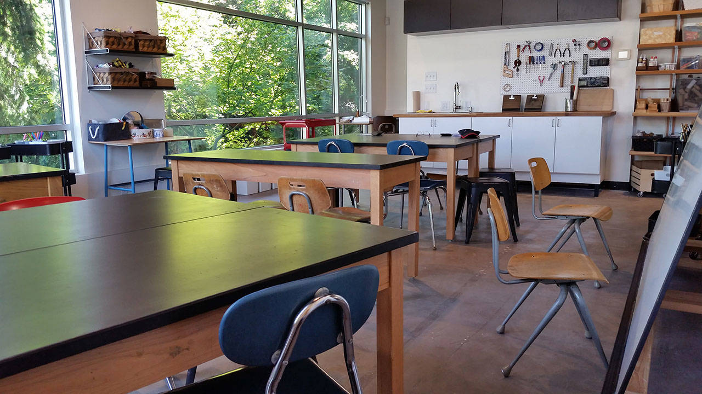
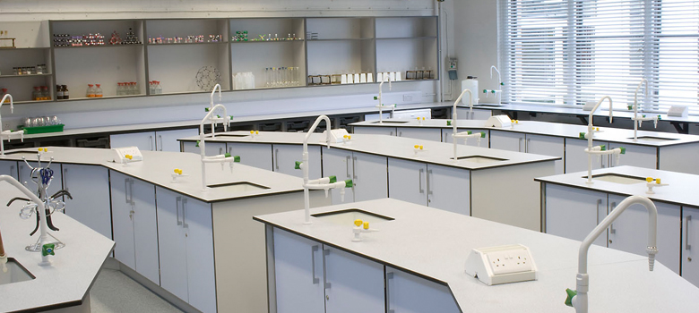

Facilities
Library
Explore our vast collection of books

Art Labs
Enjoy our Art and Paintings facilities
Science Labs
Engage in innovative experiments
Junior De Hyacinth's school art program serves as a nurturing ground for budding creativity,
offering a canvas for exploration across various artistic mediums. It cultivates confidence and a lifelong appreciation for creativity,
fostering individuality among students like you.
Explore our vast collection of books
Enjoy our Art and Paintings facilities
Engage in innovative experiments
